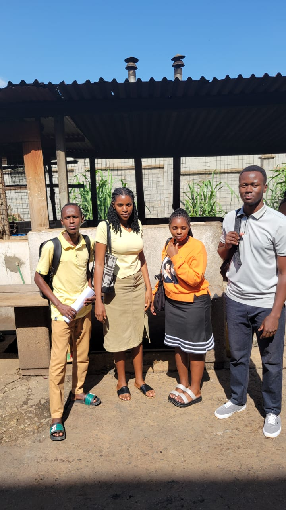

Welcome to My Academic Journey!
This blog is where I share my coursework activities, project discussions, presentations and fieldwork experiences throughout my academic journey.
📚 Session 1: Coursework Activities
Explore my academic activities, classroom experiences, assignments, practical lessons and presentations.
My Coursework
This section documents what I learn in class, the assignments I complete and the practical activities I participate in.
We are working on a Technopreneurship project focusing on problem identification towards finding it's solution .
🎥 Session 2: Project Discussions
Watch videos of my project presentations, group discussions and practical demonstrations.
My Project Videos
This section contains recordings of project discussions and demonstrations of the projects I work on.
Project Discussion Video
📸 Session 3: Fieldwork Experiences
Discover photographs, activities and lessons from my academic field visits.
My Fieldwork Gallery
This gallery will show the places I visit during fieldwork.

Fieldwork Activity 1